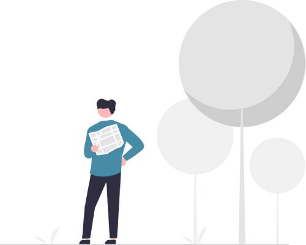
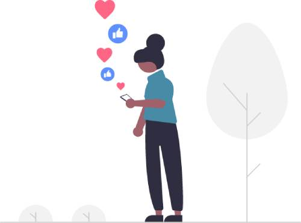

S čím vám mohu pomoci
Specializuji se jak na rodinné komplexní terapie, tak na individuální terapie jeden na jedno. Záleží mi vždy na tom, abyste se v komunikaci se mnou cítili příjemně. Každý z nás má jiný cíl a potřeby. Proto se na mne neváhejte obrátit. Terapie nejsou tabulky. Vždy je zde prostor pro otevřenou komunikaci.
Vývojové problémy a problémy v chování dětí včetně různých psychických projevů jako jsou například: nezvladatelnost, hyperaktivita, úzkosti, deprese, anorexie, bulimie, sebepoškozování, agrese...

Rodina, nebo její člen se ocitli v krizi a situaci se jim nedaří vyřešit svépomocí.
Komunikace v rodině selhává a/nebo dochází k častým hádkám. rozvedení rodiče potřebují v bezpečném prostředí podpořit ve společném rodičovství

Závislosti různých typů či zařazování se do nebezpečných sociálních skupin u dospívajících
Rodina prochází závažnou životní situací: došlo k tragédii, někdo vážně onemocněl...
Opakující se nemoci či nemoci chronické, které odolávají somatické léčbě: chronické bolesti hlavy, břicha, kožní problémy, ekzémy, nespavost, bušení srdce, píchání na hrudi, astma, zažívací obtíže, poruchy příjmu potravy a jiné problémy, které se často vracejí...

Najdete mne i na sociálních sítích